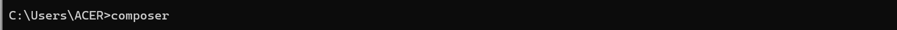
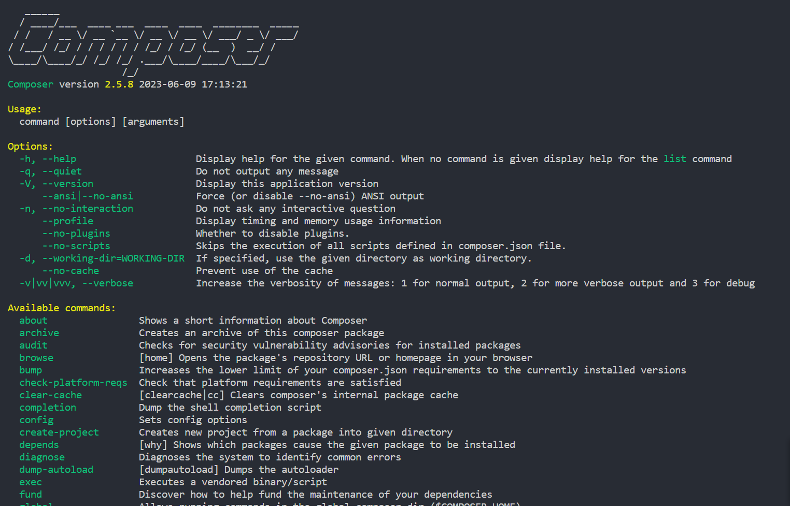
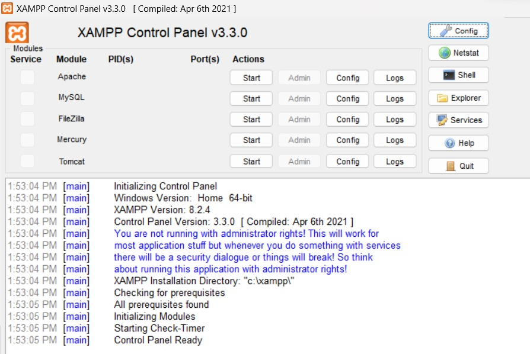
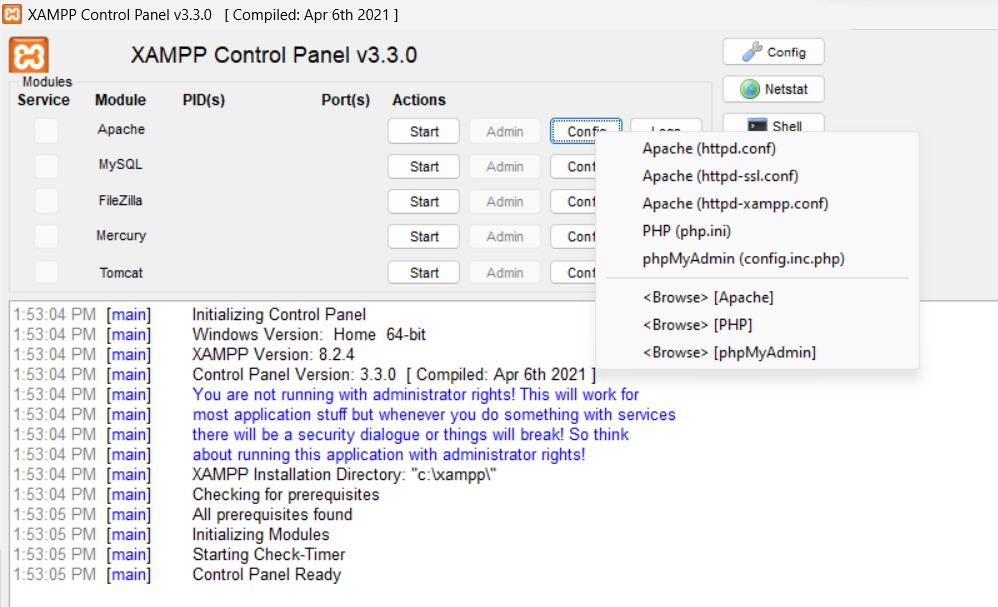
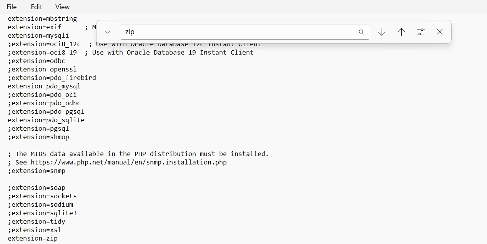
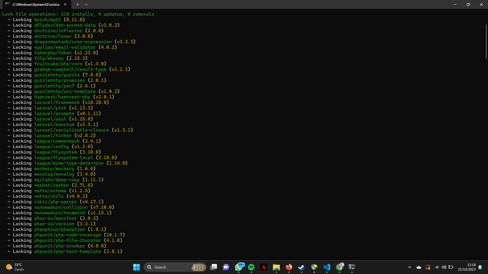

Head of Software Department HMTI
Installasi
Install XAMPP
Di Code Jam Academy kali ini langkah awal adalah menginstall XAMPP tetapi jika ada yang sudah menginstall XAMPP atau sudah menggunakan Laragon, dll bisa skip langkah ini
XAMPP adalah sebuah perangkat lunak yang menyediakan lingkungan pengembangan web yang lengkap untuk sistem operasi Windows, macOS, dan Linux. Ini singkatan dari "X" (untuk platform apapun), "Apache" (server web), "MySQL" (sistem manajemen basis data), "PHP" (bahasa pemrograman), dan "Perl" (bahasa pemrograman). XAMPP memudahkan pengembang web untuk membuat dan menguji aplikasi web lokal tanpa perlu mengonfigurasi setiap komponen secara manual.

Untuk Menginstall nya bisa menekan ini Install disana terdapat opsi installasi sesuai dengan OS kalian
Install Composer
Untuk Langkah selanjutnya adalah menginstall Composer
Composer merupakan tools dependensi manajer untuk bahasa pemrograman PHP, Sehingga dengan Composer kita bisa melakukan Installasi library-library PHP dengan mudah.

Untuk Menginstall nya bisa menekan ini Install Windows atau Install LINUX/MacOS sesuaikan dengan OS Kalian
Untuk memastikan apakah Composer sudah benar-benar terinstall di dalam device teman-teman, maka teman teman bisa coba jalankan perintah berikut di dalam terminal/cmd
Jika berhasil maka akan keluar output seperti berikut
Setelah itu kalian buka XAMPP kalian untuk yang Windows
Setelah itu kalian buka Apache->config->php.ini
lalu kalian search dengan ctrl+f lalu cari zip
lalu hapus (;) pada extension=zip
Install Package Laravel
Di dalam Laravel, ada beberapa cara yang bisa kita gunakan dalam pembuatan project salah satunya adalah composer create-project. Dengan perintah ini, kita bisa menentukan versi Laravel yang akan kita gunakan dengan lebih mudah.
Sekarang, silahkan masuk ke dalam folder dimana akan menyimpan project nya, jika menggunakan XAMPP biasanya berada di dalam folder htdocs
Setelah itu, silahkan jalankan perintah berikut ini di dalam terminal/CMD
composer create-project --prefer-dist laravel/laravel:^10.0 codejamJika perintah diatas berhasil dijalankan, maka kita akan membuat project Laravel baru dengan versi 10.X.X dan nama dari project-nya adalah codejam.
Silahkan tunggu proses installasinya sampai selesai dan pastikan terhubung dengan internet, karena semua paketnya akan diunduh secara online.
Setelah berhasil terinstall, maka selanjutnya kita akan belajar bagaimana cara menjalankan project codejam tersebut.
Silahkan jalankan perintah berikut ini di dalam terminal/CMD.
cd codejamPerintah diatas digunakan untuk masuk ke dalam folder project kita yang bernama codejam. Setelah berhasil masuk di dalam project-nya, sekarang jalankan perintah berikut ini didalam terminal/CMD untuk menjalankan server-nya.
php artisan serveJika berhasil, project Laravel kita akan dijalankan di dalam localhost dengan port 8000. Kalian bisa membukanya di dalam browser dengan mengetikan http://localhost:8000
Jika berhasil, maka hasilnya akan seperti berikut ini.
Menjalankan Storage Link
Disini kita akan belajar melakukan upload gambar di dalam project ini. Maka kita wajib menjalankan perintah storage:link agar folder storage dari Laravel di Link-kan ke dalam folder public.
Silahkan jalankan perintah berikut ini di dalam terminal/CMD dan pastikan berada di directory project Laravel nya
php artisan storage:linkKurang lebih seperti itu pembahasan awal bagaimana cara memulai membuat project baru dengan Laravel dan sekaligus belajar menjalankan projectnya
Selanjutnya kita akan membahas Front End dengan Blade Template